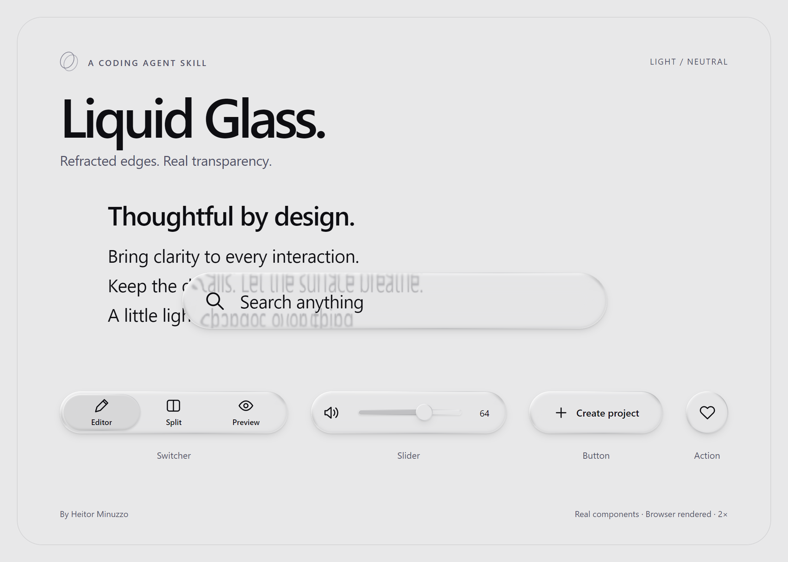

WEB / FRONT-END · SKILL PARA AGENTES DE IA
Liquid Glass Skill para componentes web
Uma receita de vidro inspirada na Apple, com refração nas bordas, transparência calibrada e conteúdo legível. Crie novas superfícies ou adapte os componentes do seu projeto.
O repositório HeitorMinuzzo/liquid-glass-skill distribui a skill liquid-glass-apple, um núcleo reutilizável em CSS e JavaScript e referências visuais. O efeito usa filtros SVG para deslocar o fundo de acordo com a curvatura da superfície. O destino é uma interface no navegador, com o framework e a identidade visual definidos pelo seu produto.


O material e seus estados
A receita foi ajustada observando o vidro sobre texto, fotografias e fundos uniformes. A refração avança para dentro dos ombros arredondados; a reflexão acompanha a curvatura, incluindo laterais e cantos. O centro usa desfoque de 0,25 px, enquanto texto e ícones do componente permanecem nítidos acima da lente.
Texto de fundo perde contraste somente sob o vidro. Fotografias recebem transmissão, cor e difusão próprias. Em fundo neutro, o volume é percebido pela reflexão contínua e pela sombra suave. Claro e escuro compartilham a geometria; cores de fundo são opcionais.
A orientação cobre os estados do componente: menus e seleções recebem acabamento em vidro, campos mantêm foco perceptível na borda e sliders preservam teclado e toque. A bolinha do slider cresce de 24 px para 29 px ao ser segurada no exemplo de referência.
Ver os componentes interativos · Testar sobre texto e fotografias
Integração com o projeto
O núcleo não tem dependências de runtime. A aplicação pode usar HTML, CSS e JavaScript ou um framework de componentes. A skill orienta a conservar layout, props, eventos, tokens e controles existentes.
- HTML, CSS e JavaScript
- Use as camadas de material, conteúdo e borda no componente real e inicialize um cenário com
createGlassScene. - React, Vue e Svelte
- Integre o cenário ao ciclo de vida do componente: inicialize após a montagem e destrua ao desmontar. O pacote traz orientação para essa adaptação; não distribui wrappers prontos para cada framework.
- Componentes existentes
- Aplique o material por uma variante, wrapper, slot, hook ou diretiva conforme a arquitetura. Preserve a semântica e as interações do produto.
O fundo precisa de uma fonte apresentacional sincronizada, como texto, gradientes e imagens estáticas. O renderer mantém essa fonte alinhada sob cada superfície. Vídeos, canvas, iframes ou uma aplicação inteira exigem outra estratégia de renderização; o núcleo não captura automaticamente qualquer conteúdo do DOM.
Na adaptação fotográfica completa, represente as fotos por elementos img com o mesmo recorte do fundo. Imagens locais ou com CORS adequado permitem amostrar sua cor. Consulte o guia técnico de integração antes de implementar.
Instalar e usar a skill
- Baixe o pacote ZIP da versão 1.0.1.
- Extraia a pasta completa
liquid-glass-apple, incluindoSKILL.md, recursos e referências. - Coloque essa pasta no diretório de skills configurado para o seu agente e confirme que ele a reconhece.
- Peça para aplicar a skill aos componentes necessários ao projeto, preservando a arquitetura e as interações.
Use $liquid-glass-apple nos componentes desta aplicação.
Preserve o framework, o layout e as interações existentes.
Inclua opções de fundo neutro e com cores.A instalação e o uso local foram verificados no Codex. Outros agentes que leem SKILL.md precisam de sua própria configuração e validação. O README inclui os caminhos de instalação e o comando para o instalador do Codex. Node.js e Python são usados nas ferramentas de desenvolvimento e verificação do repositório; não são necessários para extrair e instalar o pacote da skill.
Validação, navegadores e desempenho
A receita foi verificada em Chromium/Edge, nos temas claro e escuro e sobre texto, fotografias e fundos uniformes. Safari e iPhone precisam de verificação visual no dispositivo de destino. O fallback CSS preserva a usabilidade com uma aparência simplificada.
Na versão 1.0.1, mapas de geometria idêntica e leituras de estilo são reaproveitados. A comparação com a versão anterior produziu 18 capturas idênticas pixel a pixel no Edge. No cenário de oito superfícies iguais, os cálculos de mapa caíram de oito para um e as leituras de estilo do texto, de 512 para 64. Esses números medem trabalho de JavaScript nesse cenário, não FPS nem desempenho garantido em outros dispositivos.
O repositório inclui scripts para verificar óptica, interações, ciclo de vida e o pacote portátil. Consulte o procedimento de verificação, as notas da versão e as referências visuais.
Liquid Glass skill for web UI components
HeitorMinuzzo/liquid-glass-skill, created by Heitor Minuzzo, is an AI coding agent skill for creating or adapting browser-based components with Apple-inspired Liquid Glass. It uses CSS, JavaScript and SVG displacement filters, with no runtime dependencies in the core.
The recipe combines calculated edge and shoulder refraction, continuous reflections, local background-text attenuation and photo adaptation. Light and dark themes share the geometry, with neutral or optional colored backgrounds. Search, Switcher, Slider, menus and buttons demonstrate the same material.
The core is framework-independent, with lifecycle guidance for React, Vue and Svelte. Integration requires a synchronized presentational background; it is not automatic capture of arbitrary DOM content. Browser visuals were checked in Chromium/Edge; Safari/iPhone needs on-device validation. The skill package was installed and validated in Codex. Other agents require their own setup and verification. SwiftUI and React Native applications require an implementation for their native environment.
Read installation and integration instructions in English · Open the live demo